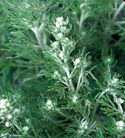

HORT 282 :: Lecture 13 :: DAVANA

Plant Profile
Family : Asteraceae
Indian name : Davanam (Sanskrit), Marikolundu (Tamil), Davana (Hindi, Kannada).
Spices and Varieties : Artemisia pallens Wall.
Distribution : India
Uses : Cosmetics, Flavouring beverages & Confectionery
 Davana (Artemisia pallens Well.) (2n=16), belonging to the family Asteraceae, is an important annual aromatic herb, much prized in India for its delicate fragrance. The Davana springs are commonly used in garlands, bouquets and religious offerlings in most part of the country. The leaves and flowers contain the essential oil valued for its exquisite and delicate aroma and is used in high=-grade perfumes and cosmetics. The oil of Davana contains hydrocarbons (20%), esters (65%) and oxygenated compounds (15%). The esters are the major constituents responsible for the characteristic smell of Davana. Saponification of the oil gives 10% cinnamic acid, while the alcohol part gives viscous oil with a high boiling point. It is reported that a new sesquiterpene ketone called cis-davanone in the oil is responsible for its characteristic odour. The other constituents isolated from the oil include a sesquiterpene ketone named ‘artemone’, novel sesquiterpenoids named.’davanafurans’ and another ketone named ‘isodavanone’.
The essential oil of Davana which is a brown, viscous liquid with a rich, fruity odour has acquired a considerable reputation in the international trade, particularly in USA and Japan where it is being used for flavouring cakes, pastries, tobacco and beverages
Originand Distribution
The plant grows wild in the temperate Himalayas. It is common in the Kashmir Valley, the Simla and Nanital Hills. It is being commercially cultivated in Karnataka, Maharastra, Kerala, Tamil Nadu and Andhra Pradesh in an area of about 1000 ha.
Description of the Plant
Davana is an aromatic, erect herb, about 60 cm tall, with much divided leaves and small yellow flowers. The stem and leaves are covered with grayish-white tomentum. The leaves are alternate, petiolate and lobed. The inflorescence is capitulate with flowers which are peduncle to sessile, axillary or forming lax racemes, simple, heterogamous having bisexual disc florets in the centre and a few pistillate ray florets on the periphery.
The outer florets are glabrous except for a few cottony hairs, tubular, generally 3-lobed. The stigma is generally 2-lobed and rarely 3-lobed. The inner florets are glabrous except for a few cottony hairs, tubular, 5-lobed and bisexual: the stamens are 5 in number with free, epipetalous filaments and a dithecous inflorescence: it has syngenecious anthers which are connective, prolonged, tapering style and bifid.
Soil
The crop is found growing on various types of soils from sandy loam to medium black. However, a fertile, well-drained, sandy loam soil which is rich in organic matter is ideal.
Climate
Season is an important aspect to be considered when Davana is grown for extracting essential oil. The oil content in the plants was observed to be maximum, when the crop was grown during the winter season compared to the other seasons. Thus, when the crop is grown for the production of oil, it should be planted during the first week of November. A few light showers with moderate winter conditions and no frost is conducive to the good growth of the plant. High temperature and heavy rains at the time of flowering have not only been found to affect the plant growth adversely, but also reduces the oil content and ultimately the oil yield.
Cultivation
Nursery raising
Davana is propagated by seeds. As the seeds lose viability rapidly, only the seeds from the previous season’s crop should only be used for sowing. About 1.5 kg of seed is required to produce enough seedlings to transplant into an area of one hectare.
Usually, nursery-beds 2 m long and 1 m wide are preferred. The surface of the beds should be clod-free. It is then incorporated with finely prepared FYM at the rate of 10 kg per bed. Sowing of seeds at the rate of 1 g/sq m is desirable. The seeds may be sown either dry or after wetting them along with sand for about 48 hours. In the latter case, the seeds are thoroughly mixed with sand @ 4-5 times their volume. To this mixture, water is added so that the sand is sufficiently wet. It is then tied in a cloth bag and stored in a warm place for 48 hours. This will hasten the sprouting of seeds and the radicle will emerge at the end of 48 hours. The nursery-bed is then flooded with water to make a pool and the sprouting seed and sand mixture is broadcasted all over the bed, homogeneously. This method helps in uniform distribution of seeds. When the seeds have settled down, a thin layer of sand is spread over just enough to cover them. The seeds will germinate within 2-3 days of sowing. Hand watering is done till the seedlings establish themselves (7-10days), after which the beds are irrigated directly though the water channels.
While sowing the dry seeds, they are mixed with sand in the ratio of 1:10 and broadcasted homogenously all over the bed. A thin layer of sand is then spread uniformly to cover the seeds and the beds are hand watered twice a day. To prevent the ants from carrying away the sees, an application of 10 kg/ha of Heptachlor to the soil about 10 days prior to sowing has been helpful. Using this method, the germination of seeds is observed in about 4-5 days.
In areas where there are rains at the time of nursery raising, the seedlings may be grown on raised nursery-beds which will also help in reducing the incidence of damping-off disease. As there is a very slow growth of seedlings initially, foliar sprays of urea (0.1%) at weekly intervals, 3 weeks after sowing, may be given to boost their growth.
Transplanting
The seedlings will be ready for transplanting in about 6-8 weeks from the date of sowing. At this stage, the seedlings should be about 10 cm tall. Before transplanting, the field is thoroughly prepared by bringing the land to a fine tilth with repeated ploughings. It is then laid out into plots of convenient size by laying out bunds and channels. The size of the plot depends on the conditions prevailing locally. However, generally, plots of 3-4 m x 1.5-2.5 m size are preferred as it facilitates irrigation, weeding and other intercultural operations.
After the preparation of the plots, the soil is incorporated with 6 t/ha of well decomposed FYM or compost. The plots are irrigated a day prior to transplanting. The seedlings are then transplanted at a spacing of 15 cm between rows and 7.5 cm between plants. Trails have shown that transplanting Davana plants closed together results in higher herbage-yield and, subsequently, higher oil-yield compared to wider spacing, which results in larger plants but lower herbage and oil-yield per unit area.
Manures and Fertilizers
Davana responds well to the application of manures and fertilizers. Well-decomposed FYM at the rate of 6 t/ha is incorporated into the soil at the time of land preparation. Subsequently, a fertilizer dose of 40 kg P and 40 kg K/ha is given at the time of transplanting. While N is applied at the rate of 120 kg/ha in three equal split doses: the first dose is given at 10 days after transplanting and the subsequent two doses at 15 days’ intervals thereafter.
Irrigation
After transplanting, the plots are immediately provided with light irrigation. Later, irrigation is provided daily till the seedlings are well established (10-12 days) and, subsequently, once in 3-4 days depending on the weather conditions.
Interculture
The field is kept weed-free by regular weeding as and when required. In all, about 2-3 hand-weedings during the early period of growth will help to keep the weeds down.
Growth Regulator Application
Growth regulators have been used to boost the growth and yield in many crops. In Davana also, an application of GA at 200 ppm after five weeks of transplanting has been found to increase the herb and essential oil-yield per unit area.
Insect Pests
No serious attack of insect pests has been reported in Davana. However, some insect pests like leaf-eating caterpillars, aphids and termites have been observed to after the crop.
The application of Aldrex to the plots will control the attack of termites, while the spraying of any systemic insecticide like 0.05% of Monocrotophos or 0.2% of Dimethoate will control the incidence of aphids and the spraying of contact insecticides like 0.2% Metacid will control leaf-eating caterpillars.
DISEASES - Damping-off
This disease is caused by fungus belonging to the Rhizoctinia spp. It is usually severe at the nursery stage, particularly when there is high humidity and cloudy weather conditions, resulting in the heavy mortality of seedlings. Controlling the irrigation will reduce the incidence of the disease. Treating the seeds with Emisan @ 0.2% or Ridona MZ at 0.1% before sowing and then drenching the seed-beds with the above chemicals a week after germination controls the disease.
Harvesting
The crop starts flowering after 110-115 days of sowing, which will be around the 2nd or 3 rd week of February. In order to obtain the maximum essential oil-yield, the plants should be harvested when about 50% of them have come to the flowering stage. This is usually at the end of February or in the 1st week of March, about 120-125 days after sowing. Harvesting is done by cutting the plants from the base. Although there are reports about the possibility of obtaining a ratoon crop in Davana, it is not practical as the main crop is harvested only during the month of March and the ratoon starts sprouting by the end of March or the beginning of April which, due to the high temperatures prevailing during these period, results in poor growth of the plants and mutilated flower-buds which may even fail to open. The crops, thus obtained, become uneconomical as the flower-heads are the major contributors of oil.
Distillation
The harvested material, before distillation, is dried under the shade for 2 days. It is better to distill this immediately rather than to store it. The dried material is steam-distilled to obtain good quality oil. However, for the estimation of essential oil under laboratory conditions, particularly of a small sample, the shade-dried material is hydro-distilled.
In the case of hydro-distillation, the material is placed in a glass still and water is added to it, so that around three-fourths of the material is immersed in water and it is then heated. During boiling, the water vapours along with the vaporized oil moves into the condenser, gets condensed and collects in a graduated receive. Based on the amount of oil collected, the oil content of the material can be determined.
However, for commercial purposes, steam distillation should be used. The distillation equipment consists of : (i) A Boiler, which produces the stem; (ii) A Distillation Still in which the material is filled and steam is passed through; (iii)A Condenser, wherein the vaporized oil gets condensed into a liquid form and (iv) A Receiver, to collect the oil.
The boiler and the distillation still are made of steel. The boiler is connected to the distillation still by a steel pipe through which the steam passes. A perforated grid (plate) is placed at the bottom of the still on which the plant material is kept. The distillation still is connected to the condenser through a pipe. The condenser consists of many metallic pipes mounted inside a jacket. It is provided with an inlet and an outlet. Water is passed through the gap between the pipes in order to cool the steam and essential oil vapours into liquid form, which then gets collected in the steel receiver. The oil, being lighter than water and insoluble, floats on the surface of the water.
For distillation, the air-dried herbage is chopped into smaller pieces and then charged into the still. While filling, the material should be tightly packed inside the still, as otherwise steam channels may be formed during distillation resulting in poor yields. About 5-6 hours are required to complete the charge.
After decantation of the top, clear layer of oil, the bottom layer which consists of small quantities of water and oil has to be clarifies. To separate the oil, a saturated solution of sodium chloride is added to this mixture so that a separated layer of water and oil is formed. The lower water-layer is drained off with the help of a separating funnel and the upper layer of oil is collected.
Yield and Oil Content
The yield of fresh herbage, including flower-heads, is around 12-13 t/ha. Though, under laboratory conditions, the oil content in the whole plant after during it in the shade for 2 days is 0.29%. An average recovery of around 0.2% under large-scale distillation, yielding 12-13 kg/ha of oil may be considered satisfactory.
When oil is extracted from the whole plant, the flower-heads contribute the major portion of the oil. The contribution of the leaves and stems towards the percentage of oil content in a whole plant is very little. The percentage of oil content in different plant parts, worked out under laboratory conditions on V/W basis, is as follows:
Plant part |
Percentage of oil content |
Flower-heads |
0.53 |
Herbage (leaves + stem) |
0.14 |
Whole plant |
0.29 |
- Botanical name of Davana is ____________
- What are the uses of Davana _____________
- The inflorescence present in Davana is ____________
- Davana is propagated by ____________________
- Oil recovery percentage of Davana is _________________
| Download this lecture as PDF here |